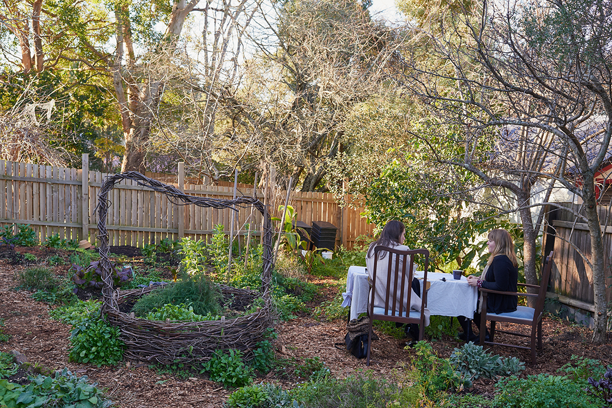

Bowerbirds - The Boweress
Make, Grow, Learn and Share
15 January, 2018
You started Lyttleton Stores this with your sister…?
Yes, yes, I did, so she’s a jewellery designer and she’s gone back into that and she also does a lot of belly dancing internationally so she’s kind of taking her time to get back into those things now that we’ve finished the set-up phase and now that’s it more on a roll she can get back into her personal practices.
The whole place has been a shop, a business and residence the whole time…it’s really old-school. Its where me and the dogs and cats hang out and the staff and family and friends (laughs) it’s just a constant flow of people, so it’s more like a giant share house with so many people.
So, the idea was always there, having grown up in the mountains, everyone has a garden, everyone has neighbours with different fruit and nut trees or vegetables that they really love to grow and we would all just naturally swap…like I’ve got too many lemons, you’ve got too many plums let’s have a swap and make some jam kind of thing. So, I automatically knew that my neighbours from my parent’s place would be coming in and saying I have too much of this can we swap? So, the idea is that they get store credit and they don’t just have to swap for other fruit and vegetable, they can swap for anything, things they can’t grow, so we can make a great localised economy where we have people bringing in things and people taking out things. You could even have a workshop if you’ve banked up enough store credit, come and learn something that you don’t know about…art and craft…cooking, how to ferment different things.
What does local mean to you…and how integral is it to your space…?
Local is so important to us, artists, and growers, makers, craftspeople, artisans and just also people who are in the community who just grow things in their own backyards are part of our community. We have a really great system for backyard growers where we support hem by giving them information and knowledge and share their information and knowledge with each other. Different people from up and down the mountains have different experiences in their spot, in their backyard. We have this amazing diversity in the Blue Mountains, Glenbrook which is really quite sub-tropical all the way up to a really cold climate in Mt Victoria. So, we have a big range of growing conditions and we’re just trying to do a big swap of produce and knowledge. Its bringing it all together in the mid mountains.
So Lyttleton is organic?
Yes, and we encourage everyone to be as well. Some people take that really intensely and work with all sorts of amazing companion planting and biodynamic preparations. We do alot of fermenting, lots of it along with pickling…it’s such a great preserving method and its hands on…if I have way too many radishes and carrots I’ll just pickle them in a vinegar and then they’re just stable and you can put them on the shelf for years. So, you can still eat those vegetables when they’re not around and you can infuse different herbs and spices.
It seems only natural that you would start some type of eatery…?
We have a lot of opportunities to cook for people already. We have events here…art gallery openings so I always cook up a lot of things for that and we also have open garden evenings and afternoons where I cook. It’s mainly the workshops though…so if it’s a full day workshop doesn’t matter whether its art or cooking we’ll have a beautiful feast and Ill cook for everybody and we’ll sit in the garden and eat it so that’s kind of my cooking outlet. Also, we can’t actually have a café or restaurant due to the zoning and I also don’t really want to push it and try and get it changed because it would just be a whole other project (laughs)
And it seems that you well and truly have your hands full (laughs)
Yeah and I get that fix of being able to cook for people and I think that’s really important as eating together is such a joy and it totally changes everybody. A workshop might start and we might have people a bit quiet and really intent on learning and by the time you’ve done the first part of the workshop and you go out and you have your big lunch everyone is really loose and chatting and talking and catching up and this is the power of sharing a meal.
This is also a testament to you and the comfortable environment you provide for people…
Yeah and people feel really involved…we get lots of presents and I don’t even know who half of them are from, people just leave us nice gifts…I got left a box of wine, a cowbell for the gate, a basketful of cumquats and this is just in the last few days…
Do you have a lot of volunteers?
We do, yes, but we have such a solid group of working people, a filmmaker, a photographer, a naturopath, all of these really talented people, an illustrator, a graphic designer who just bring their outside skills naturally and so often we don’t really need any help. I think where people actually volunteer their time and energy the most is by coming to all of the events that we put on and putting themselves into our community that we’ve been creating here. So there not just buying something and running back out again, sometimes people spend hours chatting out the front to other customers.
Nice, so where we are now…is this open to the public, is this a community garden?
Yeah people can come in, we have seedlings for sale, worm wee but it’s not a community garden its more of a demonstration garden if anything, it’s a working space, a productive space that we get food for the shop and the kitchen but also, it’s a demonstration garden in that we want to be a great example of how productive a mid mountains garden or any blue mountains normal sized block could be in terms of food production. This is also where we do our gardening workshops
Your father said you were the sails of the dreamer ship and I thought that was really beautiful, how much of your dreams have come to or are coming to fruition?
I think that what he probably meant by that was that (laughs) I’m the person who gets carried away with ideas, makes them happen but then goes oh no what have I just done and I’ve gotten everyone on this crazy dream with me and now they’re all here oh I hope I haven’t lead you down the garden path(laughs)
I think that this actual project is something I have been thinking about since I was like fourteen, early high school and I was dreaming up this idea and it was all the fun things that we would like to do as a job. At the time it was a café, a garden, so the garden would be growing the strawberries to make my strawberry milkshakes (laughs), there would be one room for making crazy art, one room for dancing, all of these different multifaceted things and so over time I got really serious about it and thought well why wouldn’t I do something like this. So, it has changed what it has looked like but those core values and things have been with me for half of my life I reckon.
So, you’ve spent a fair amount of time in Tasmania, what did you bring back from your experiences there…?
Yeah well I tried to start this down there and I think what happened when I went to Tasmania was that I went there when I was very young, I went there when I was either nineteen or twenty and I went down with the idea to start this but because I didn’t have the amazing community that I grew up with in the blue mountains I felt really quite like oh my goodness I have so much to learn and no support network so what I did was I went out learning and over that decade I learned a lot about the things that I wanted to offer back to the world. I did a degree in fine arts in furniture making, had a catering company so the idea was before then I went back a step and did all the learning and then it was finally time and then this place came up so it was really good timing and how funny that it ended up being back in my hometown as I was thinking oh no I’ll put it in Spain or Tasmania (laughs) anywhere else.
So, this is really close to your heart physically and mentally…?
Yeah and just having that network of friends and family and community, welcoming me back which is so nice… and really fun!
How transformative do you find that your environment can be for you?
I think that all of my big ideas are when I am outside. I used to and still do go walking every day and that’s where all of the big ideas come out. In Tasmania, it was along the beach, here it’s in the bush and I feel like that space and the fact that’s it my comfort and familiar I feel that it’s like where I can be myself or something and let my brain go. One of the places where I had one of my really big ideas was when I was farming in the pyrenes, the French pyrenes. I was woofing and I was there for 6 weeks and it was just this kind of moment where I realised how hard it was to farm! Like it’s no joke
Yeah there ain’t no hunter wellingtons, RM Williams boots…(laughs)
Yeah and it was such a wake-up moment of wow if people didn’t do this we wouldn’t have any food. And that this is really important and when you’re living in the city or even the blue mountains and it’s all so suburban this is almost just for fun or games or whatever but the reality is you have to grow food or there is no food. And for someone to have some sort of part of that or at least an awareness so it’s nice for this to be a place where people can get in touch what plants look like and what fresh produce tastes like.
Yeah, I feel like there is a very accessible, welcoming vibe from the minute you get here. So many places with the label organic tied to them can have an almost elitist, trendy, too expensive barrier to them…and it feels organic here in the real sense of being organic. I mean you can’t get more organic than sitting in the vegetable garden (laughs)
Yeah well look I think I have been consciously trying to unmarket that way of being organic and it’s a great thing for organic to be trendy because it means more people know about it, but that exclusivity aspect to organic is not us at all. I mean we don’t do solely certified organic, we have actually a really broad term in the aspect of organic in that we actually look at the practice of the grower. So, they might actually be too small of a grower but they might have better practice than a certified grower. So, it is really important for us to look beyond the certification. But I mean certification is really important too because if you’re in the city or you’re at a supermarket, you know that that’s the certified product and it is organic and that those are the standards but if you’re in conversation with someone at a market or here you can find out about their practice or go to their farm! They might actually be doing more in terms of making a healthy ecosystem in their garden, above and beyond for what the certification calls for because the certification is really looking at big scale whereas someone on a smaller scale can do even better practice yet they’re less likely to certify because they don’t need to because they can have that direct communication with people so for us it’s a breakdown of looking at the direct communication between the grower their practice and the buyer.
How does the notion of organic transcend through to all aspects of your life?
For me it’s about the intention, coming from a place of love and generosity rather than thinking about it in terms of best and better, competitiveness or profit and I think that when you’re really coming from a place of love for the people the environment the place wherever then that’s a really organic natural thing for humans and I think that that’s a really good way to look at organics in general. Even building community that will happen organically if it comes from a place of love.
That’s a really beautiful note to end on…if you would like to learn, grow and become part of this community in some way see the link below
http://www.lyttletonstores.com.au/
